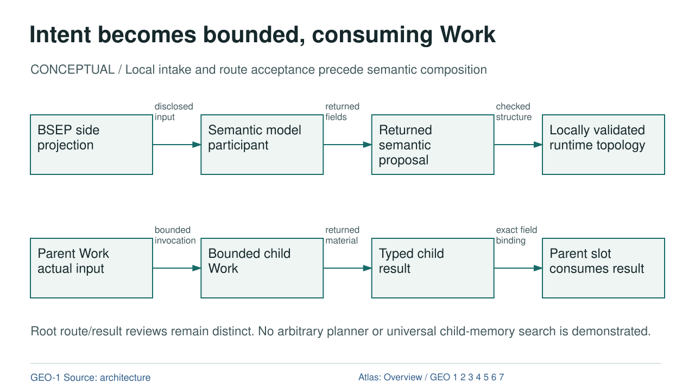

Intent becomes bounded, consuming Work

Diagram text equivalent
- Intent becomes bounded, consuming Work
- CONCEPTUAL / Local intake and route acceptance precede semantic composition
- BSEP: BSEP side projection
- BSEP side projection
- MODEL: Semantic model participant
- Semantic model participant
- PROPOSAL: Returned semantic proposal
- Returned semantic proposal
- TOPOLOGY: Locally validated runtime topology
- Locally validated runtime topology
- DATA: disclosed input
- disclosed input
- PROPOSAL: returned fields
- returned fields
- DERIVATION: checked structure
- checked structure
- WORK: Parent Work actual input
- Parent Work actual input
- CHILD: Bounded child Work
- Bounded child Work
- RESULT: Typed child result
- Typed child result
- CONSUMPTION: Parent slot consumes result
- Parent slot consumes result
- EXECUTION: bounded invocation
- bounded invocation
- DATA: returned material
- returned material
- DATA: exact field binding
- exact field binding
- Root route/result reviews remain distinct. No arbitrary planner or universal child-memory search is demonstrated.
- rule
- GEO-1 Source: architecture
- Atlas: Overview / GEO 1 2 3 4 5 6 7
CONCEPTUAL / Local intake and route acceptance precede semantic composition
OVERVIEW | GEO-1 | GEO-2 | GEO-3 | GEO-4 | GEO-5 | GEO-6 | GEO-7
Text Equivalent
Intent becomes bounded, consuming Work
CONCEPTUAL / Local intake and route acceptance precede semantic composition
BSEP side projection
Semantic model participant
Returned semantic proposal
Locally validated runtime topology
disclosed input
returned fields
checked structure
Parent Work actual input
Bounded child Work
Typed child result
Parent slot consumes result
bounded invocation
returned material
exact field binding
Root route/result reviews remain distinct. No arbitrary planner or universal child-memory search is demonstrated.
GEO-1 Source: architecture
Atlas: Overview / GEO 1 2 3 4 5 6 7
Exact Relations
- BSEP to MODEL: DATA, disclosed input.
- MODEL to PROPOSAL: PROPOSAL, returned fields.
- PROPOSAL to TOPOLOGY: DERIVATION, checked structure.
- WORK to CHILD: EXECUTION, bounded invocation.
- CHILD to RESULT: DATA, returned material.
- RESULT to CONSUMPTION: DATA, exact field binding.
Sources and Boundary
Colour is supplementary. Relation labels state what crosses each edge. Editorial ordering does not establish new runtime authority.